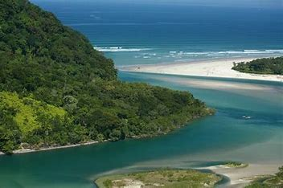

MAIS INFORMAÇÕES SOBRE A PRAIA:
Localização: Bertioga, no litoral norte do estado de São Paulo, Brasil. A entrada principal fica na altura do km 198,5 da Rodovia Rio-Santos (BR-101), dentro do condomínio Costa do Sol, com acesso livre.
Descrição Detalhada da Praia de Guaratuba
A Praia de Guaratuba é uma das mais belas e tranquilas praias de Bertioga, conhecida por suas águas claras e pela preservação ambiental.
Características Principais:
- Extensão e Areia: A praia possui uma faixa de areia branca e compacta, com aproximadamente 8 km de extensão.
- Águas: O mar é calmo e ideal para banho, com poucas ondas. No encontro do rio Guaratuba com o mar, as águas são ainda mais tranquilas, perfeitas para famílias e crianças.
- Vegetação: Cercada pela Mata Atlântica, a praia oferece sombra natural e um ambiente fresco e agradável.
- Infraestrutura: A Praia de Guaratuba conta com estacionamentos gratuitos dentro do condomínio, mas não possui banheiros públicos ou chuveiros. Existem algumas barracas que oferecem bebidas e lanches, especialmente nos finais de semana.
Atividades:
- Caminhadas e Exploração: A extensa faixa de areia é perfeita para longas caminhadas e pedaladas, além de ser um ótimo local para apreciar o pôr do sol.
- Stand-Up Paddle e Caiaque: A praia é ideal para a prática de stand-up paddle e caiaque, especialmente no encontro do rio com o mar
- Pesca: A pesca no rio Guaratuba é uma atividade comum e apreciada pelos visitantes.